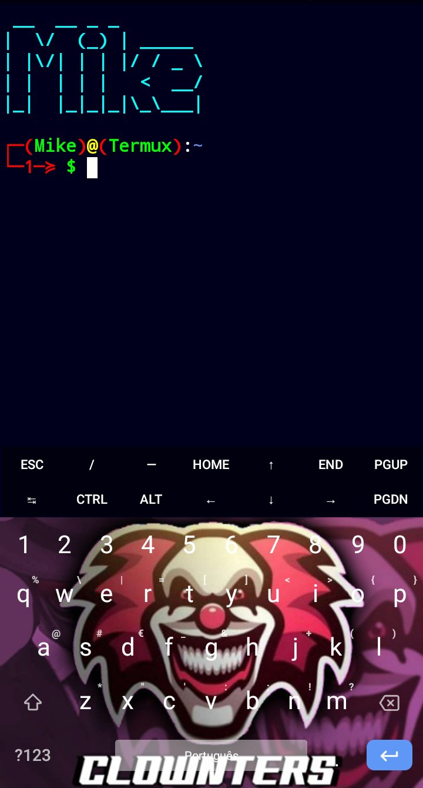

Termux é um emulado de terminal que garante acesso ao shell do Android o sh, sem requerer acesso root. O app permite acessar o shell sh e bash para executar comandos Linux e Unix. Além disso, oferece um repositório de programas e pacotes que podem ser instalados com o comando apt, apt-get, pkg, dpkg e outros, tal como no Debian ou Ubuntu
•1.1 O que é um Shell
Shell é um programa especial disponibilizado ao usuário ou algum programa para que este possa se comunicar diretamente com o sistema operacional. O Shell aceita comandos simples e de fácil entendimento para o usuário e os interpreta para que o Kernel possa executar as ações desejadas.
O download do termux pode ser realizado pelo Fdroid e a play store, porém a versão da play store está desatualizada.
>>> DOWNLOAD DO TERMUX <<<

Os comandos pode ser divididos em dois grupos builtin e utilitários, Comandos builtin é integrados que são exclusivos ou foram estendidos no Shell e utilitário não vem inclementado no Shell.
•3.2 Utilitários
ls
cpmv
clear